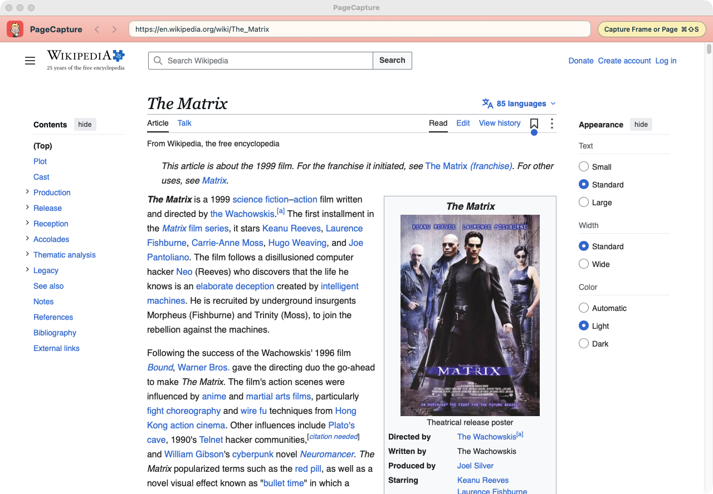
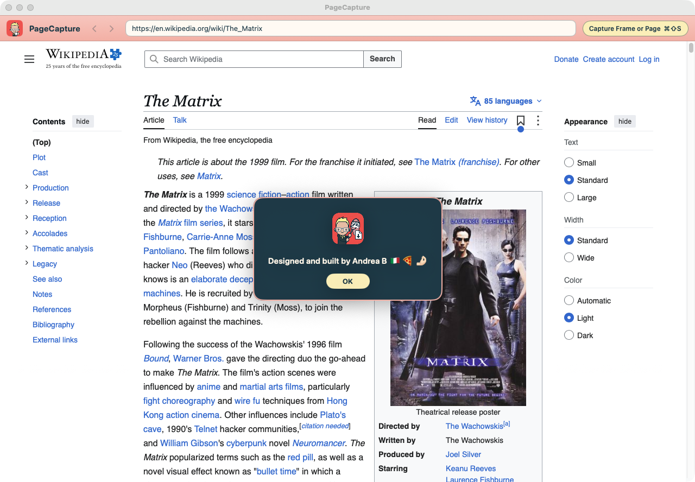
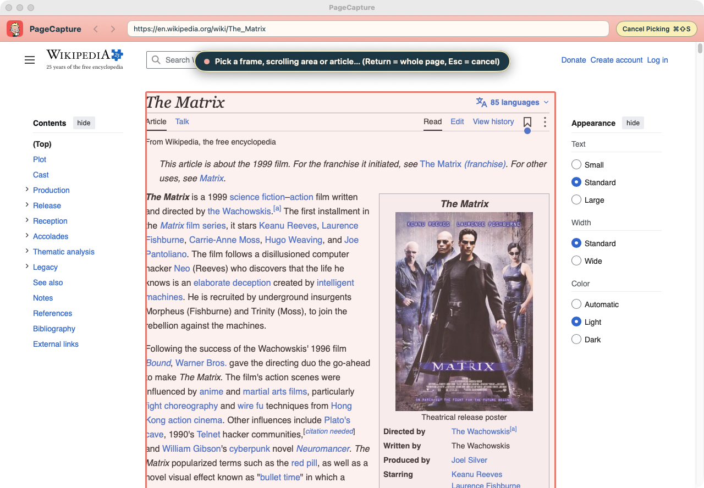
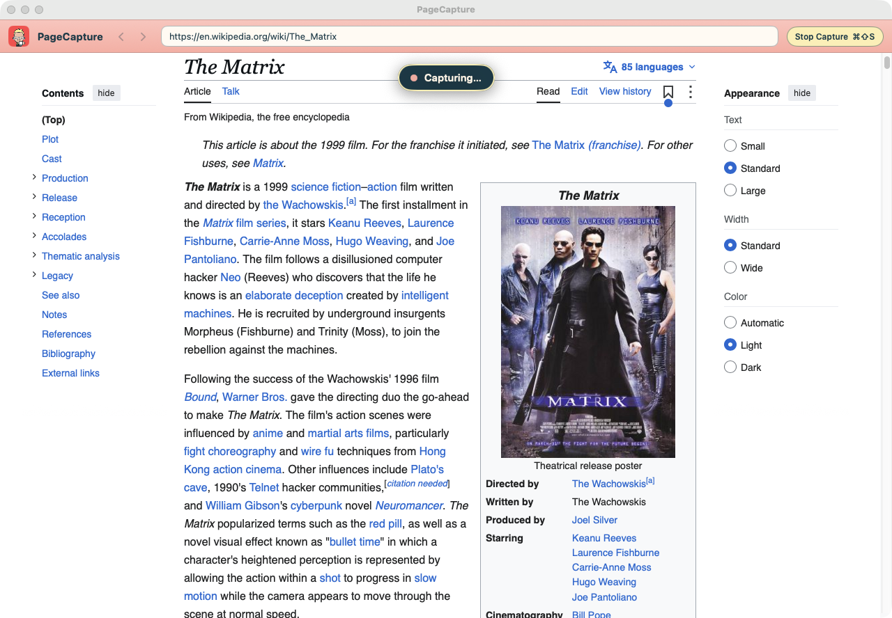
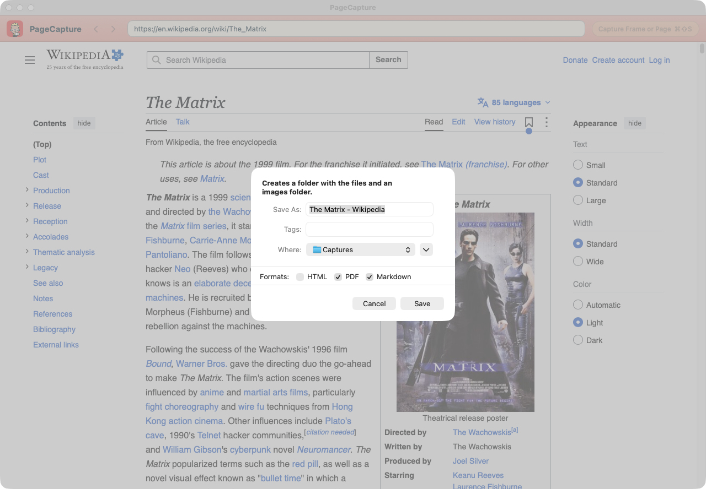
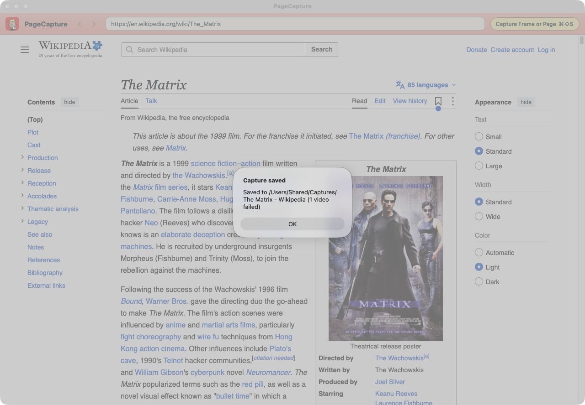

1. Install and update
- Open
PageCapture.dmgand drag PageCapture onto the Applications folder next to it. - The first time only: PageCapture is not signed with an Apple Developer ID, so macOS blocks it. Open it once, click Done on the warning, then in System Settings → Privacy & Security click Open Anyway next to the message about PageCapture (on macOS 14: right-click the app → Open). If you save videos, run this in Terminal instead, so the video tools inside the app are allowed too:
xattr -dr com.apple.quarantine /Applications/PageCapture.app - To update, quit PageCapture, drag the new version onto Applications and choose Replace. Then eject the PageCapture disk in the Finder sidebar, so an old copy is never installed by mistake.
2. The window

From left to right, the header bar has:
- Back and forward arrows (also ⌘[ and ⌘]). They fade when there is no page to go to.
- The address field. Type or paste a web address and press Return.
- The yellow capture button, which does the same as ⌘⇧S and shows what it will do next (capture, cancel, stop).

3. Capture a page
One shortcut does everything: ⌘⇧S.
Pick what to capture
Press ⌘⇧S. A banner at the top says the app is waiting for you to pick. Move the mouse over the page: the part under the pointer is outlined. You can pick:
- a frame (a page embedded in the page, such as a course viewer),
- a scrolling area (a panel that scrolls on its own),
- the page's main article, on sites that mark it, such as Wikipedia and most documentation sites,
- the whole page: click outside any outlined area, or press Return.
Press Esc, or ⌘⇧S again, to cancel.

Let it scroll
Click to start. The banner changes to Capturing… and the app scrolls from top to bottom by itself, collecting the content in order as it loads. Along the way it:
- waits for images and lists that only load when you scroll to them,
- opens collapsed sections, accordions and every tab, so their content is saved too,
- plays each video briefly, with the sound off, to find its file, then pauses it,
- keeps content that the page removes again as you scroll past it.
The capture ends by itself at the bottom. To stop early and keep what has been collected so far, press ⌘⇧S again.

4. Save
When the capture ends, a Finder save panel opens. Name the capture, choose where to put it, and tick the formats you want: HTML, PDF, Markdown, in any combination. PageCapture remembers your ticks for next time, and at least one box always stays ticked.

Saving creates one folder with everything inside:
Name/
Name.html
Name.pdf
Name.md
images/ the page's images
videos/ the page's videos, when there are any
5. The three formats
HTML
One self-contained file that looks like the page on screen, with the site's own styles, fonts and images inside it. It opens in any browser, offline, at any window width. Menus, sidebars and footers are left out, and every tab and collapsed section is shown open, under its title.
The page laid out on A4 or Letter (from your Mac's region), with text at 10 pt. Text can be selected and links clicked. Pictures, boxes and lines are not cut across pages, and every tab is printed in turn, under its title.
Markdown
The content as plain, structured text: headings, paragraphs, lists, tables, links and images. Menus, buttons and player controls are left out. It is the most useful format to keep, search, edit or give to other tools.
6. Reading Markdown on a Mac
Markdown is the best way to keep what you capture. It is plain text, so any app can open it today and in twenty years. It is small, easy to search and edit, and it is what note apps and AI tools read best. Its images stay as normal files in the images/ folder beside it.
macOS has no built-in Markdown reader, though. TextEdit shows the raw text with its symbols (#, **, ) instead of formatted headings and pictures. Install one of these free readers, which are still being updated:
| Reader | What it is |
|---|---|
| Readdown | A read-only reader: it opens .md files formatted and never changes them. It also previews them in the Finder when you press Space. Free, macOS 13 or later. |
| Imark | A reader first, with an optional edit mode for quick fixes. Free and open source, macOS 14 or later. |
| MarkViewer | A native viewer that can also edit in place. Free, macOS 10.15 or later. |
.md files in your reader: in the Finder, select a .md file, press ⌘I, choose the app under Open with, then click Change All….7. Images and videos
Images
Every picture in the captured part is saved in images/, numbered in page order. Images in newer formats that not every app can show (AVIF, WebP, HEIC, JPEG XL) are saved as PNG.
Videos
Videos are saved in videos/ as MP4:
- video files and streamed videos are downloaded with your browser sign-in,
- YouTube and Vimeo videos embedded in the page are downloaded with the bundled yt-dlp tool.
In all three formats each video appears as its preview picture with a ▶ play button, linking to the saved file. A video that cannot be saved links to the original instead, with a short note saying why.
Copy-protected videos (DRM) are never downloaded: they are linked to the original. Only save videos you are allowed to keep.
8. Signed-in sites
To capture a page that needs an account, sign in inside PageCapture's own window, just as in any browser. PageCapture keeps that sign-in for next time. It does not use the sign-ins of Safari or Chrome.
When saving videos from YouTube or Vimeo, only that site's own cookies are passed to the download tool, in a private temporary file that is deleted straight away. Nothing temporary is written into your capture folder.
9. Keyboard shortcuts
| Shortcut | What it does |
|---|---|
| ⌘⇧S | Start picking · cancel picking · stop capturing and keep what was collected |
| Return | While picking: capture the whole page |
| Esc | While picking: cancel |
| ⌘[ / ⌘] | Back / forward |
| ⌘? | Open this manual |
10. Tips and limits
- Keep the PageCapture window visible while it captures: macOS slows down hidden windows.
- Pick the article, not the whole page, when you only want the content: the result is cleaner in every format.
- The PDF links to saved videos with their full location on your Mac, so they stop working if you move the capture folder. The HTML and Markdown links keep working because they are relative.
- A tab or section that takes a long time to load its content after a click may be saved empty.
- Very wide tables or code blocks are cut at the right margin of the PDF.
- Pop-up windows for signing in and links that open a new window are not supported yet.
- Quitting during a save stops the download tools and cleans up first.